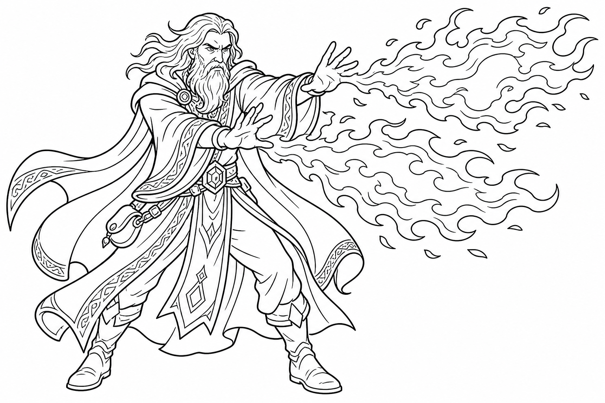

The Magic Prodigy!
Welcome, spellcaster! Unlike Wizards who have to study books, you were BORN with magic! Maybe your great-grandpa was a dragon, or maybe you were zapped by wild magic as a baby. Magic flows through your veins, and you can twist and change your spells in incredible ways!

You have a pool of magical energy called Sorcery Points. You can spend these points to create extra Spell Slots when you run out, or you can turn your Spell Slots into more Sorcery Points. You are a battery of pure magic!
This is what makes you special! You can spend Sorcery Points to bend the rules of your spells. You can cast a spell totally silently (Subtle Spell), shoot a spell twice as far (Distant Spell), or even cast a spell that hits TWO monsters instead of one (Twinned Spell)!
As you go on adventures and defeat monsters, you will gain Experience Points (XP) and level up! Here is what you get for your first 5 levels as a Sorcerer:
| Level | Awesome New Powers! |
|---|---|
| Level 1 | Sorcerous Origin: You pick where your magic comes from (like a Dragon or Wild Magic). Spellcasting: You know 4 Cantrips (easy spells) and 2 Level 1 spells! |
| Level 2 | Font of Magic: You get 2 Sorcery Points! You can use these to create extra spell slots so you can cast more magic. |
| Level 3 | Metamagic: You learn how to twist your spells! You pick 2 Metamagic options (like Twinned Spell to hit two targets, or Quickened Spell to cast really fast). Level 2 Spells: You can now learn stronger spells, like Scorching Ray or Invisibility! |
| Level 4 | Ability Score Improvement: You can increase your Charisma to make your spells even harder to dodge, or pick a cool Feat! |
| Level 5 | Level 3 Spells: You unlock super powerful magic! You can now cast the famous Fireball spell or Fly through the air! |
At Level 1, you choose your Sorcerous Origin. This is where your magic comes from! Here are two really fun options:
"Roar! I have the power of a mighty dragon!"
Somewhere in your family tree, there was a real, actual dragon! Because of this, you have dragon magic inside you.
"Oops! Did I just turn the goblin into a potted plant?"
Your magic is chaotic, unpredictable, and super fun! Sometimes when you cast a spell, something completely random and crazy happens.
Sorcerers don't wear heavy armor or carry big swords. Your magic is your weapon!
You have very few hit points. Let the Fighter or the Paladin stand in the front to take the hits. You should stand far away and blast the monsters with your spells!
Don't forget your special tricks! If two of your friends are hurt, use Twinned Spell to cast a buff on both of them at once. If a monster is hiding, use Seeking Spell to make sure your magic hits them!
Your Sorcery Points are super important. If you run out of Spell Slots, you can spend Sorcery Points to make more! But be careful not to use them all up too fast.
Because your magic is a part of you, it affects your personality! Since Charisma is your highest stat, you are naturally confident, charming, and maybe a little bit flashy.
When a Sorcerer casts a spell, it looks unique to them! Think about how your magic looks, sounds, and smells:
Have fun, be creative, and let your magic shine!
Your magical powers are growing stronger! Here is what happens when you reach the next levels:
| Level | Amazing New Powers! |
|---|---|
| Level 6 | Subclass Feature: Your Sorcerous Origin gives you a new power! (Like extra damage for Draconic Bloodline or bending luck for Wild Magic.) |
| Level 7 | Level 4 Spells: You unlock bigger spells! You can turn invisible and walk through walls, or create a giant wall of fire! |
| Level 8 | Ability Score Improvement: Increase your Charisma again, or pick a fun new Feat! |
| Level 9 | Level 5 Spells: Wow! You can now cast spells that hold monsters in place (like Hold Monster) or create a giant cone of freezing cold! |
| Level 10 | More Metamagic: You learn another special trick for bending your spells, making you even trickier! |
Throughout history, many powerful heroes were born with magic. Here are a few famous Sorcerers to inspire you:
Ember was born with glowing red scales on her arms. She once saved a whole village from an icy blizzard by using her powerful fire magic to melt the snow and keep everyone warm. She is known as the bravest Sorcerer in the fiery lands!
Zook is a gnome with Wild Magic. Once, he tried to cast a simple light spell, and accidentally turned his hair neon pink and made it rain bubbles! He travels the world solving problems in the most unpredictable and funny ways.
Keep your eyes peeled for these amazing treasures on your adventures!
Not sure what to do on your turn? Here is a quick guide to being an awesome Sorcerer in battle:
What does your Sorcerer look like? Grab some crayons or colored pencils and draw them here!